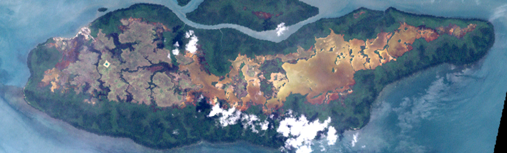

Saibai Island Flood Barrier Project
Executive Summary
Design Area: 3.2 Infrastructure - Temporary flood mitigation structures
Proposal Summary
The project aims to address episodic flooding of culturally significant sites on Saibai Island through rapidly deployable, modular flood barriers. These temporary structures provide immediate short-term protection during king tides and storm surges, particularly for the cemetery, school access roads, and south-east township areas.
Overview of Design
The modular flood barrier system achieves flood protection through interlocking plastic panels that form a temporary wall with raised edges for enhanced sealing and stability. Implementation is supported through community-led deployment protocols developed in consultation with Torres Strait Island Regional Council (TSIRC) and local Elders.
The design includes the following physical components:
- High-density polyethylene (HDPE) modular panels (100cm x 50cm x 50cm)
- Interlocking top and bottom connectors
- Ergonomic handles for manual transport
- Anti-slip adhesive base strips
- Central drainage grooves
Who will use this design? Community members and TSIRC maintenance crews will deploy barriers during flood alerts. Elders and cultural custodians guide placement near sacred sites to ensure cultural appropriateness.
Key Considerations
- Materials sourced from mainland Australia (Warringah Plastics, Sydney) with transport via Cairns
- Maintenance requires rinsing, gasket inspection, and storage in labeled crates
- Deployment requires 1-hour setup time by small community teams
- Further consultation with Saibai Elders required to finalize cemetery placement protocols
- Next steps include pilot deployment and community training workshops
Proposed Materials and Cost Summary
Purchased Materials: 600 recycled HDPE panels, anti-slip adhesive strips, protective storage crates
Other Materials: Transport containers, deployment tools, training materials
Estimated Total Cost: $48,000 - $55,000 AUD (approximately 150,000 - 175,000 PGK)
Team Declaration
| Group Member Name | Project Contributions |
|---|---|
| Cameron W | Website design, Project details |
| Jonathan H | Background, Reccomendations |
| Gayan P | Prototype design, detailed design |
| Yunxuan H | Implementation, cost analysis |
| King L | Design solutions, problem |
Team Acknowledgement
We acknowledge that Aboriginal and Torres Strait Islander people maintain a unique, continuing and profound spiritual and cultural connection to land and sea, and practice language, lore and culture which enriches our lives and identity as a nation.
1. Project Details
Saibai Island, located in the Torres Strait north of Queensland, faces frequent flooding due to its extremely low elevation and exposure to king tides. Despite the construction of a 2.2 km seawall in 2017 costing $23.8 million, several key areas, particularly the local cemetery remain unprotected and continue to experience tidal inundation and erosion. Flooding has damaged graves, displaced tombstones, and caused loss of cultural heritage.
The cemetery holds deep cultural and spiritual importance for the Saibai community, serving as a place of ancestral connection and continuity of Ailan Kastom traditions. Protecting this site is therefore both an environmental and cultural priority.
Climate change has intensified the island's vulnerability, with rising sea levels and stronger storm surges increasing damage risk. Large-scale seawalls are costly and unsuitable for sacred areas, highlighting the need for flexible, community-based, and environmentally sensitive solutions.
Project Context
Saibai Island faces frequent flooding caused by storm surges, king tides, and rising sea levels. Although a seawall was built in 2017, many areas, especially the south-eastern township and the culturally significant cemetery remain unprotected.
Design Area and Project Opportunity
Design Area 3.2: Infrastructure - Temporary flood mitigation structures
Consider durable, rapidly deployable designs that provide short-term protection against flooding, particularly during extreme weather events, storm surges, or seasonal high tides. These could be particularly useful in areas such as the southeastern portion of the township or the culturally sensitive cemetery.
Needs Statement
Saibai Island in the Torres Strait is experiencing ongoing problems with flooding and erosion. The island sits only a few metres above sea level, which makes it extremely vulnerable to high tides, storm surges and the effects of climate change. Flooding regularly damages homes, roads and important community facilities while also threatening local water and food supplies. Existing flood defences such as small embankments and temporary seawalls have not been effective. They break down over time and are expensive to maintain, leaving the community exposed to further damage. A stronger and longer lasting solution is needed that is affordable and practical for Saibai’s remote location. To meet this need, the project focuses on developing a lightweight plastic flood barrier. The design uses vacuum pressure thermoforming to create panels that are durable, resistant to saltwater and easy to install and maintain. This approach aims to improve flood protection for the island’s residents and safeguard the community’s infrastructure and way of life for the future.
2. Background
Saibai Island, located in the Torres Strait, is a low-lying community that faces frequent flooding caused by high tides, storm surges, and heavy rainfall. These events have a major impact on the island's infrastructure, homes, and daily life. Flooding also disrupts access to essential services, damages local ecosystems, and poses risks to community health and safety. Because of its remote location, finding reliable and sustainable solutions is especially important for the people of Saibai.
Context of the Problem
Social Impact
Flooding threatens community safety, damages infrastructure, and disrupts daily life, creating a strong need for reliable short-term protection.
Cultural Significance
The cemetery and surrounding land hold deep spiritual meaning for the Saibai community. Any flood solution must respect Ailan Kastom, the island's traditional law and involve local consultation to ensure cultural sensitivity.
Environmental Context
Saibai's mangrove ecosystems are fragile yet vital natural buffers. Our design needs to minimize ecological disturbance and use sustainable materials to protect these environments.
Economic Considerations
Transporting materials to this remote island is costly. Therefore, our solution must be affordable, modular, and easy to maintain locally, ensuring long-term practicality for the community.
3. Problem Description
It's clear that Saibai Island is extremely vulnerable to outside forces with its low elevation, limited disaster funds, and a weakening natural environment caused by global warming. Before we can design a solution, it's important we understand the true severity of these factors, to see just how ongoing and serious this problem really is.
Saibai lies only a few kilometres from Papua New Guinea, and most of the island is less than two metres above sea level. According to the Torres Strait Regional Authority, sea levels in this region are rising between 6 and 8 millimetres per year, almost triple the global average. In 2015, a $24 million seawall and flood barrier was built to protect the community. But only six months after its completion, storm surges breached the barrier, flooding parts of the island once again. This highlights how even newly built defences are struggling to withstand the pace and force of rising tides.
During king tides, saltwater regularly floods roads, homes, and gardens, causing land degradation and erosion. Even the island's cemetery has been repeatedly submerged headstones are eroding, and families worry about the resting places of their ancestors. Elders have described this as heartbreaking, saying it feels like "losing part of our culture and identity."
Much of Saibai's land is made up of mangroves and swamp, which makes it highly sensitive to flooding and erosion. Rising seas kill vegetation, contaminate drinking water, and damage gardens. The gardens play a huge part in Saibai culture, where older Indigenous peoples continue to teach how to grow crops like cassava, taro and bananas. These crops are used in culturally significant customs like Ailan Kastom, meaning to connect to the land, sea and spirit. According to locals, increasing waterlogged conditions are slowly contaminating the gardens, causing a shift away from their cultural heritage.
Because materials are difficult to transport to such a remote location, hundreds of kilometers from any ports or major cities, repairing damaged infrastructure takes time and resources that are not always available. This means even relatively small floods or storm surges can leave long-lasting impacts on homes, roads, and community facilities.
3. Design Solution Options
In developing a defensible design response for Saibai Island, we first articulated the problem space with precision: episodic, short-duration inundation driven by king tides and storm surge intermittently compromises critical access and culturally significant sites, specifically the school access road, the south-east lowlands, and the cemetery. We then operationalised the brief for Design Opportunity 3.2 into an evaluative framework comprising six criteria: affordability, durability/adaptability, simplicity, rapid deployability, suitability for temporary/short-term application, and maintainability each weighted for near-term decision utility. This framework underpinned a comparative assessment (decision matrix) of four concept families and exposed the trade-offs inherent in speed of deployment, hydraulic efficacy, lifecycle burden, and place-specific constraints (transport, storage, community operation).
3.1 Design Criteria
1. Affordability
Definition: Total cost the community must carry, including capital outlay, transport/staging costs, event activation costs, and routine upkeep over 3–5 years.
Why it matters: Budgets are finite and freight is expensive; a solution that is cheap to buy but costly to move/store or activate shifts burden to council crews and households. Lower lifecycle cost = more frequent, reliable protection.
2. Durability & Adaptability
Definition: Structural robustness through repeated uses and the ability to conform to different geometries (straight runs, corners, undulations) without specialist re-engineering.
Why it matters: Frequent failures or "one-site-only" designs create downtime and stranded assets; adaptable systems deliver value across the school road, south-east lowlands and cemetery with the same kit.
3. Simplicity
Definition: The fewest steps, tools and judgments needed to deploy and recover the system safely.
Why it matters: Community crews operate under time pressure; simpler systems reduce errors, injuries and supervision needs, and speed up re-opening of roads and sites.
4. Rapidly Deployable
Definition: Time from trigger to protection in place for a 30–120 m line, including transport from storage.
Why it matters: Early hours drive most damage and access loss on Saibai; speed determines whether school and services remain functional.
5. Temporary / Short-Term
Definition: Provides a barrier or mitigation for a short event (1–3 days), then leaves no permanent alteration to ground or heritage settings.
Why it matters: Temporary measures respect cultural places (e.g., the cemetery), avoid ongoing visual/land impacts, and can be moved to where the next risk is.
6. Maintainable
Definition: The level and predictability of inspection, cleaning and minor part replacement to keep the system ready.
Why it matters: High or unpredictable upkeep competes with other council tasks and risks "de-readiness"; steady, light maintenance protects reliability.
Design Selection Matrix
| Criteria | Weight | Photovoltaic Pump | Composite Permeable Paving | Ecosystem Adaptations | Temporary Mobile Barriers |
|---|---|---|---|---|---|
| Affordability | 5 | 2 | 4 | 5 | 3 |
| Durability & Adaptability | 5 | 2 | 2 | 4 | 5 |
| Simplicity | 5 | 1 | 5 | 5 | 5 |
| Rapidly Deployable | 5 | 1 | 5 | 2 | 5 |
| Temporary/Short-term | 5 | 1 | 2 | 1 | 5 |
| Maintainable | 5 | 2 | 2 | 4 | 5 |
| Cumulative Score | 30 | 9 | 20 | 21 | 28 |
| Ranking | 4th | 3rd | 2nd | 1st - SELECTED |
Option 1: Photovoltaic Pump

A solar panel system connected directly to an electric pump to remove water. The system would place panels and a controller near low spots, run hoses to a discharge point, and move pooled water after a tide or storm.
Limitations: Does not stop incoming water only shifts water after it arrives. Setup and priming take time, flow can be limited during bad weather, and intakes can clog with debris.
Score: 9/30 (Ranked 4th)
Option 2: Permeable Pavement
Composite permeable paving made with a different ratio of cement, aggregate, and water. It allows rain and flood water to pass through the surface into a base layer or storage bed, reducing local ponding.
Limitations: Not a flood barrier. Does not stop surge water at doors or along roads. Pores can clog with sediment and salt, requiring vacuum cleaning maintenance.
Score: 20/30 (Ranked 3rd)
Option 3: Ecosystem Adaptations
Nature-based measures such as saline-tolerant mangroves or dune planting to build long-term coastal resilience. After establishment, they are affordable, low-maintenance, and bring social and environmental co-benefits.
Limitations: Not rapidly deployable and cannot protect the island for the next 1–3-day flood event. Recommended as a long-term complement to hard measures.
Score: Variable (Long-term solution)
Option 4: Temporary & Demountable Barriers ✓
Modular panels that interlock to create a short flood wall with raised edges for better seal and stability. Durable, rapid to deploy, and temporary matching Design Opportunity 3.2 for short-term (1–3 day) events.
Advantages: The only option that both blocks inflow and is fast across sites. Reusable with low upkeep, can be placed at priority sites.
Score: Highest rating (Selected solution)
Selected Solution and Justification: Temporary & Demountable Barriers
Photovoltaic Pump ❌
For Photovoltaic pump, this idea uses solar panels to power a submersible pump that moves pooled water after a tide or storm.
On affordability, the parts are many (panels, controller, pump, long hoses), and cleaning the intake adds running cost.
For durability and adaptability, the electrics cope with salt only if cared for, and the intake can clog; the system also works only at low points and cannot shape to doors or road edges.
It is not simple to use because crews must site the rack, prime the pump, place a screened intake, and watch the flow.
It is not rapidly deployable, since it protects only after water arrives and output drops in cloudy, windy weather.
It is temporary in the sense that it can be removed, but it does not block inflow.
Maintenance is high because the intake and hoses need frequent cleaning and checks.
Permeable Pavement ❌
For permeable pavement, this is a fixed surface that lets water pass into a base layer to reduce ponding.
It is expensive to build on an island because it needs demolition, new base material, and heavy freight, so affordability is limited.
It is durable when loads are right, but adaptability is low because it is tied to one site and cannot be moved to the next hotspot.
It is simple on the day of a flood—there is nothing to set up—but building it is complex civil work.
It is not rapidly deployable, since it cannot be rolled out for a 1–3-day event.
It is not temporary; it changes the ground and is hard to reverse near sensitive places.
Maintenance needs vacuum cleaning to stop pores from clogging with sediment and salt, which means special equipment must come to Saibai.
Ecosystem Adaptations ❌
For Ecosystem adaptations, planting saline-tolerant mangroves or building up dunes can cut wave energy and give many social and environmental gains.
Costs are modest for plants and care, so affordability is fair, and once established the systems are very durable.
Adaptability is guided by nature: they must be placed where the shore and soils allow, not where a door line or road edge demands, so they cannot "bend" to fit tight geometry.
They are simple to look after once they take, but permits and biosecurity steps add effort at the start.
They are not rapid, because living systems need seasons to grow and cannot protect the next 1–3-day event.
They are permanent landscape measures, not temporary kits.
Maintenance after year one is light, with small infill and weeding after storms.
Temporary & Demountable Barriers ✅
For Temporary & demountable barriers, this is a modular kit that interlocks to make a short wall with raised edges for a better seal.
It is affordable to stage because it is bought in pieces, stacks well for freight, and needs only a small team to use.
It is durable and highly adaptable: the modules are tough, the joints form corners and returns, and the same kit fits the school road, the south-east area, and the cemetery.
It is simple: place, interlock, seat the edge, and check the seal—no specialist trades.
It is rapidly deployable and can be in place within the first hour after a tide alert, so it blocks inflow rather than moving water later.
It is truly temporary, sitting on pads with no digging, and it leaves the site as it was.
Maintenance is light—rinse, inspect gaskets and joints, restack in labelled crates—so readiness stays high.
4. Detailed Design
When discussing mobile flood barriers, we're specifically referring to modern approaches like Bluemont's Boxwall Flood Barrier that use the weight of the water being redirected to self-anchor and create a stronger barrier wall. These structures are reasonably cost-effective for mitigating flood damage, and their modular nature means simple maintenance or hot swapping of components.
For the residents of Saibai Island, this means being able to mitigate escaping flood water and the potential damages to those key and culturally valued structures such as the cemetery. Additionally, during off-flood times the culture and history built around these structures won't be disrupted by these barriers due to their temporary nature: there are no fixed elements that would alter how the residents approach these structures in their day-to-day lives.
By having these wall-like flood barriers in place, transportation around the residential areas, certain structures, and some roads remain accessible to a degree, facilitating the coordination of supplies to support areas in need. This opens several development opportunities that were previously disrupted by flood management, such as the improvement of early warning systems, building key infrastructure, or further developing fixed flood mitigation options. They aren't a complete replacement for current flood mitigation options but rather a complement that alleviates some pressures and allows more time for their development.
Design Features
Updated Dimensions: 100cm x 80cm x 50cm
Further research into Saibai's torrential flooding revealed extensive flooding and erosion at Saibai's cemetery wall in addition to meteorological data, citing Saibai's peak rainfall of 135.8mm this year alone, according to Australian Meteorology. A thickness of 5mm was settled, the industry standard for most barriers. While some can be as thin as 1.5mm, given the plastic construction we'll be working in - not metal sheets - 5mm was what was decided.
Ergonomic Handling
The handle was retained, but widened to 10cm in width, allowing them to be held by the handle in a two-handed grip in the event that a stack needed to be moved. This, and the model's lightweight make as per its plastic construction - an estimated ~6 kg, makes this design rapidly deployable in the event of flooding.
Managing Waterflow
Rounded edges were added to multiple points in order to reduce hydrodynamic stress and improve water flow. A second groove was also added, done to accommodate for greater load bearing during peak periods of rainfall, as well as to improve drainage capacity, with the semi-circular tube design acting as makeshift pipes. Finally, while not strictly part of the prototype's model design, the final implementation would see tarpaulin overlaid between joints to prevent leakage.
Additional Stability
A top connector point was added to improve structural stability through 2 points of connection and reducing wobble when placed upon uneven terrain, such as the unpaved ground surrounding the local cemetery. This would also reduce the risk of separation during flooding periods while allowing for modular linking. Finally, anti-slip adhesive strips were added to the base to increase friction with the ground, helping anchor the board and minimize water infiltration.
This refined design allowed us to evaluate the prototype's efficiency under simulated conditions and identify its scalability for larger flood-prone areas.
Addressing Community Concerns
One of the largest issues surrounding Saibai Island's development is flooding, especially during extreme weather events, storm surges, and seasonal high tides. To address this issue, we designed our solution to be a rapidly deployable flood barrier that provides immediate short-term protection against flooding, removing the unnecessary time needed to fully construct a flood barrier during floods (such as a sandbagging method).
Additionally, the plastic injection molded design allows our solution to be as cost-effective as possible with materials while also being durable against flood waters, opening the opportunity to stock up on more units. With the modular nature of these barriers in combination with cost-effectiveness, maintenance is simplified to swapping out damaged barriers and either replacing or repairing them to extend their lifetime.
Furthermore, our solution meets the needs of Saibai Islanders in a culturally appropriate manner by complementing existing temporary and fixed flood mitigation structures. Specifically, it protects the culture and history of key structures within the township from escaping flood waters and prevents potential flood damage from taking significant resources for repair.
During off-flood times, our solution won't disrupt the culture and history surrounding these structures because they are completely removable with no fixed elements that may alter the way the islanders would approach certain structures. This is further emphasized by the overall design that enables barriers to be stacked on top of each other, which significantly assists with transportation and storage.
Finally, by instating the use of these barriers, transportation around structures and the residential areas of the township remains accessible to a degree, facilitating the circulation of support around the island during floods. This availability for transport, alongside resources made available by the cost-effectiveness of these barriers, opens opportunities for development in other aspects of the island worth investing in, such as building more key infrastructure or improving the seawall to secure the island's future.

5. Prototyping
Prototype Development Process
Low-Fidelity Wireframe Model
During the design process, we initially used a low-fidelity wireframe model to quickly sketch out which features we felt were worth adding or removing within a short timeframe before committing them to a higher-fidelity CAD model.
Features carried forward:
- Ergonomic handle for easy transportation
- Connecting mechanism at the bottom (cylinder and hole)
- Central groove for load bearing capability
- Initial dimensions: 50cm × 50cm × 80cm


High-Fidelity CAD Model
For the high-fidelity model, all previously mentioned features were retained with modifications:
- Height increased to 100cm based on research showing king tide inundation at Saibai's cemetery wall
- 5mm thickness - industry standard for L-shaped barriers
- Handle widened to 10cm allowing two-handed grip for carrying stacks
- Top connector added improving structural stability through 2 connection points
- Second groove added to accommodate peak rainfall periods and improve drainage
- Anti-slip adhesive strips added to base to increase friction with ground
Testing Methodology
Planned testing of the design's load-bearing capacity and leakage control under king-tide conditions is segmented into digital simulation, succeeded by real-world evaluation within a controlled environment. A simulation within SolidWorks will aid in assessing the effects of hydrostatic pressure, helping identify areas of potential structural bulging and refine material distribution before physical fabrication. The prototype will then be tested at the Manly Hydraulics Laboratory, a specialist facility offering controlled flood simulation environments, allowing for accurate observation of the design's performance under real-world tidal conditions.
SolidWorks Simulation Analysis
Initial SolidWorks simulation applied hydrostatic pressure equivalent to one meter of standing water (9810 N/m²). Testing was performed on a flat vertical panel of similar thickness to illustrate pressure distribution across the surface—intensifying toward the base. Red arrows (representing force vectors) increase in size with depth, while the blue gradient shows bulging under load. Although the L-shaped geometry and double-groove design weren't included in this preliminary test, the visualized deformation offers a useful approximation. Bulging remains within manageable bounds, suggesting material viability under flood conditions typical to Saibai Island. Future simulations will incorporate the complete structure and anchoring system to validate long-term performance and leak resistance.
Wave Basin Testing (Multidirectional Flow)
The prototype will undergo physical testing at Manly Hydraulics Laboratory using the Wave Basin facility (30 m × 20 m × 1 m) featuring a random, multidirectional wave generator. This setup is ideal for simulating pooled tidal surge and chaotic floodwater flow—particularly relevant for modeling Saibai Island's king tide pooling during high-rainfall events. The barrier will be secured along a perimeter, with pressure, overtopping, and deformation responses monitored under various wave heights and frequencies to assess real-world performance.
2D Wave Flume Testing (Linear Impact)
The 2D Wave Flume (30 m × 1 m × 1.8 m) will enable controlled, linear wave impacts against the prototype's upright face. This setup allows precise measurement of structural flex, leakage along the barrier seam, and uplift forces on the anti-slip base. High-speed cameras and in-line sensors will provide deformation data, leak initiation points, and stress propagation through the groove system, offering critical validation of the interlocking mechanism's performance under sustained pressure.
Future Design Iterations
Future iterations will explore integration with biodegradable tarps and coral-aggregate concrete for hybrid natural–engineered resilience. Additional enhancements, such as hemp-fiber reinforcement and localized material sourcing, will improve both sustainability and cultural compatibility with Saibai Island's environment. These developments aim to create a more ecologically integrated flood defense system that works in harmony with the island's natural ecosystem.
.png)
Note: Digital simulation results guide prototype refinement before physical testing. Full hydraulics testing data and structural evaluation metrics will be documented in Appendix 2 for comprehensive reference.
6. Implementation Plan
Implementation Site: Saibai Cemetery
Located west of the township, the site has an area of approximately 500 m² and a perimeter of 300 m. It holds profound cultural, spiritual and community significance, representing connections to Ancestors, Country, and Ailan Kastom traditions. Despite the construction of a 2.2 km seawall in 2017 costing $23.8 million, the cemetery continues to experience flooding during every king tide, which causes erosion of the shoreline and the washing away of wooden frames and tombstones.
Some graves are no longer identifiable, making flood protection a matter not only of safety but also of cultural preservation. This site was selected because it highlights the urgent need for temporary, low-cost flood protection that respects cultural values and environmental sensitivity.
Governance and Coordination
Implementation will be jointly coordinated through the Torres Strait Island Regional Council (TSIRC) and the Torres Strait Regional Authority (TSRA).
TSIRC - Local Government
Represents 15 island communities across the region. Responsible for public infrastructure, education, monitoring, and maintenance.
TSRA - Commonwealth Agency
Leading representative agency responsible for adaptation planning, funding allocation, and coordination of island resilience projects.
Climate Resilience Centre
Torres Strait and Northern Peninsula Area Climate Resilience Centre provides additional technical and logistical support.
Manufacturing and Logistics
Production will be managed in collaboration with Warringah Plastics (Brookvale, Sydney), which specializes in sheet plastic thermoforming using recycled ABS/HDPE materials. The total cost for 600 modular barriers is approximately $48,000 + GST + delivery.
Manufacturing steps include:
- Thermoforming of recycled HDPE sheets
- CNC trimming and finishing
- Quality inspection under ISO-certified standards
- Assembly of interlocking mechanisms
- Application of anti-slip base strips
Finished products will be transported via road freight to Cairns, then shipped by barge to Saibai Island. Each barrier weighs around 6 kg, allowing efficient manual handling and community-based deployment without heavy machinery. This lightweight and modular design minimizes environmental disturbance during installation and simplifies storage after use.
Community and Cultural Collaboration
Implementation must follow a culturally sensitive and community-driven approach:
- Elder Consultation: Local Elders and cultural custodians will be consulted before installation to ensure appropriate placement around sacred areas
- Traditional Ecological Knowledge: The project incorporates TEK developed over thousands of years to guide design, placement, and maintenance strategies
- Community Training: Members will be trained in safe assembly, deployment, and post-event inspection to encourage local ownership
- Free, Prior and Informed Consent: FPIC principles will be followed to respect Indigenous sovereignty and intellectual property rights
By bridging Indigenous knowledge and modern engineering, this approach promotes both resilience and cultural continuity.
Implementation Summary
The implementation plan integrates technical feasibility, governance collaboration, and cultural respect. By working with TSIRC, TSRA, and Saibai community representatives, this project ensures that temporary flood barriers are not only effective and affordable but also aligned with local traditions. This plan represents a model for community-led resilience, combining sustainable engineering with Indigenous knowledge to protect Saibai's ancestral lands and cultural heritage for future generations.
7. Cost Analysis
For our cost analysis on project implementation, there are many different costs to account for:
| Description | Estimated Cost (AUD) | Notes |
|---|---|---|
| Materials | $32,000 - $36,000 | High-density polyethylene (HDPE), plastic panels, structural supports, sealing components, anti-slip strips |
| Manufacturing and Fabrication | $48,000 + GST | Vacuum pressure thermoforming, CNC cutting, reinforcement, quality checks (600 units @ Warringah Plastics) |
| Transportation | $8,000 - $12,000 | Road freight Sydney to Cairns, barge shipping Cairns to Saibai Island |
| Labor | $5,000 - $8,000 | Community training, initial deployment assistance, setup coordination |
| Equipment & Machinery | $3,000 - $5,000 | Storage containers, transport trolleys, deployment tools, safety equipment |
| Environmental and Cultural Compliance | $4,000 - $6,000 | Permits, environmental assessments, Elder consultation fees, cultural impact studies |
| Maintenance (Annual) | $2,000 - $3,000 | Routine inspections, cleaning, gasket replacement, minor repairs |
| Contingency Fund | $10,000 - $15,000 | Emergency funds for unforeseen costs and delays (15-20% buffer) |
| TOTAL ESTIMATED COST | $112,000 - $133,000 AUD | Approximately 355,000 - 420,000 PGK |

Funding Opportunities
Australian Government Grants
Emergency Response Fund, National Disaster Risk Reduction Framework grants, Indigenous Advancement Strategy funding
Torres Strait Regional Authority
TSRA Climate Change Adaptation Program, Infrastructure Development Fund
Community Partnerships
Engineers Without Borders Australia, corporate sustainability partnerships, university research collaborations
International Climate Funds
Pacific Climate Change Adaptation Program, Green Climate Fund small grants
Long-Term Cost Comparison
Compared to the $23.8 million seawall (which does not protect the cemetery), this modular barrier system represents a cost-effective, targeted solution. Over a 10-year lifespan with minimal maintenance ($2,500/year average), the total cost of ownership is approximately $158,000 AUD less than 1% of the seawall cost while providing critical protection for culturally significant sites.
8. Other Considerations
User Story Map
.png)
9. Recommendations
Further Research Required
- Tidal Monitoring: Install water level sensors at key locations to improve flood prediction and deployment timing
- Soil Analysis: Conduct geotechnical surveys at proposed barrier sites to ensure adequate ground stability
- Cultural Mapping: Complete detailed cultural significance mapping with Elders to identify all sensitive areas requiring special consideration
- Material Testing: Conduct long-term UV exposure and saltwater corrosion testing on HDPE samples in actual Saibai conditions
- Community Capacity Assessment: Evaluate current community disaster response capabilities and training needs
Client Action Items
Pilot Program
Implement a 6-month pilot deployment with 50-100 barriers at the cemetery site to validate design and community acceptance
Training Development
Develop culturally appropriate training materials and conduct hands-on workshops for community deployment teams
Storage Infrastructure
Establish secure, weatherproof storage facilities near priority deployment sites to reduce activation time
Integration Planning
Coordinate with existing disaster management protocols and early warning systems operated by TSIRC
Next Steps
- Secure funding through identified grant opportunities
- Conduct comprehensive Elder consultation and obtain Free, Prior and Informed Consent
- Finalize manufacturing agreement with Warringah Plastics
- Develop detailed deployment protocols and training curriculum
- Complete pilot program and gather community feedback
- Refine design based on pilot results
- Scale implementation to additional priority sites
Vision for the Future
This project represents more than flood protection, it is a partnership between modern engineering and ancient wisdom, between technology and tradition. By respecting Ailan Kastom while providing practical resilience, we create a pathway for Saibai to protect its heritage for generations to come.
References
References formatted in APA style
7md. (2025). Premium L-shaped flood barrier ABS door flood protection anti-slip water baffle for garage & basement. https://www.7md.ae/shop/premium-l-shaped-flood-barrier-abs-door-flood-protection-anti-slip-water-baffle-for-garage-basement-42994
Archibald-Binge, E. (2018, January 31). "This place is a danger zone": Torres Strait residents evacuate as tides breach new $24m seawall. NITV. https://www.sbs.com.au/nitv/article/this-place-is-a-danger-zone-torres-strait-residents-evacuate-as-tides-breach-new-24m-seawall/w63nu5f1k
Australian Climate Case. (2025, March 28). Uncles Pabai & Paul, Traditional owners from the Torres Strait leading a class action climate case against the Australian government [Video]. Instagram. https://www.instagram.com/reel/DH2xUQqPmfT/
Australian Climate Case. (n.d.). Wadhuam Pabai's story. https://takeaction.australianclimatecase.org.au/wadhuam-pabais-story/
Australian Meteorology. (2025). Saibai Island climate history. http://www.meteorology.com.au/local-climate-history/qld/saibai-island
Bluemont. (2025). Flooding solutions & prevention barriers. https://www.bluemont.com.au/flood-prevention/
Federal Court of Australia. (2025, July 15). Kabai v Commonwealth of Australia [2025] FCA 796 [Federal Court judgment]. https://www.judgments.fedcourt.gov.au/judgments/Judgments/fca/single/2025/2025fca0796
Jenkins, K. (2025, July 13). Elders' legal bid to save homes, culture coming to end. The Canberra Times. https://www.canberratimes.com.au/story/9014577/elders-legal-bid-to-save-homes-culture-coming-to-end/
Koppens Developments. (2018, March 6). Saibai Island seawall and bund wall construction. https://www.koppens.com.au/2018/03/06/saibai-island-sea-wall-and-bund-wall/
Manly Hydraulics Laboratory. (2025). Facilities. NSW Government. https://mhl.nsw.gov.au/Facilities
Margaret Broadbent. (n.d.). Manager cultural capabilities, Aboriginal Health Directorate, South Eastern Sydney Local Health District.
NonCAD Keys. (2020, March 20). SOLIDWORKS simulation – Hydrostatic pressure [Video]. YouTube. https://www.youtube.com/watch?v=YUCt-ZOvATM
NSW Department of Customer Service. (2016, January 18). Welcome to Manly Hydraulics Lab [Video]. YouTube. https://youtu.be/sAJ9VXh6SwQ?list=PLGtTLhJVGt3zCe8R1e5nbZu76YdLXIUi1
Tearfund. (2021). "I cried for my home..." Tearfund Australia. https://www.tearfund.org.au/stories/i-cried-for-my-home
Torres Strait Island Regional Council. (2018). TSIRC Saibai Island maps [PDF]. https://ewb.app.box.com/s/htwdu5gwjdbsrw7oo9lnypdgwdk2u9b7
Torres Strait Regional Authority. (2025, February 5). Climate change | TSRA. TSRA. https://www.tsra.gov.au/the-torres-strait/climate-change
Wellauer, K., & Ruddick, B. (2024, December 15). Saibai Island waits for a climate change lifeline as rising Torres Strait closes in. ABC News. https://www.abc.net.au/news/2024-12-15/rising-ocean-threat-to-island-culture-torres-strait-australia/104613496
Supporting Documentation
Appendix 1: Group Charter
Our group divided the project based on each member’s strengths and prior experience. Cameron W focused on the website design and project details, using Claude.AI for support with layout and structure. Jonathan H worked on the background research and recommendations. Gayan P developed the prototype and detailed design, drawing on his previous experience in this area. Yunxuan H was responsible for the implementation and cost analysis, where he had prior knowledge and skill. King L contributed to the design solutions and overall project structure, ensuring the website followed a similar format to our previous presentations for consistency and clarity.
Appendix 2: Prototype Testing Results
A digital simulation was completed in SolidWorks to see how the design would perform during flooding. The test applied water pressure equal to one metre of standing water (9810 N/m²) on a flat panel made from the same material. The results showed that pressure increased toward the base, causing slight bulging that stayed within safe limits. While the full L-shaped design and double-groove seal were not included in this first test, the results showed the material could handle typical flood pressures on Saibai Island. Future simulations will include the full structure, anchoring system, and groove joints to better test leak prevention and long-term performance.
Appendix 3: Meeting Minutes
no approximate time was obtained however, going off tutorial times when the website was our number one priority we can assume 12 hours of coordinated team-time or 720 minutes
Appendix 4: Prompt Log
Generative AI tools were used during the development of this project to assist with content writing, editing, and idea generation. Tools such as ChatGPT and Claude.AI were used to help refine the website structure and to suggest ways to present technical information more effectively. All final content, design choices, and project decisions were reviewed, edited, and approved by the group members to ensure accuracy and originality. The AI tools were used as support for writing and formatting, not for creating the project’s core ideas or technical designs.